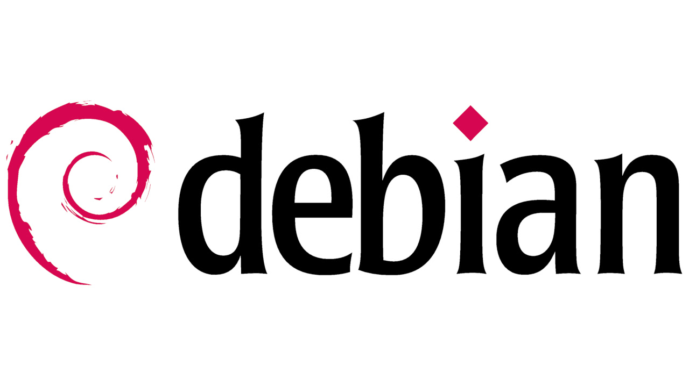

Debian
Debian — один из старейших и наиболее стабильных дистрибутивов Linux. Он славится своим консервативным подходом к обновлениям и огромным репозиторием программ. Debian подходит для серверов и рабочих станций, но его настройка может потребовать больше усилий, чем у Ubuntu. Управление пакетами также осуществляется через APT.